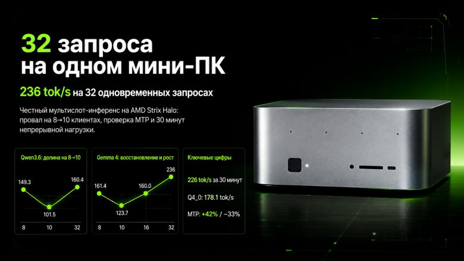

One $2,000 mini PC just served 32 people talking to Gemma 4 at once — no cloud, no cluster
No discrete GPU, no rack, no cluster — one $2,000 mini PC under a desk held 226 tokens/second, averaged over a full 30-minute run, while serving 32 simultaneous chat sessions through Gemma 4. A home-lab builder who goes by AGmind (LLMOps/AI platform engineer by trade, GitHub handle botAGI) spent a week finding out exactly where that same box breaks, and published every number — including the ones that made it look bad.
Edge in the Wild is our spotlight on real builders running real models on real edge hardware — credited, sourced, no invented numbers. This one's a single home-lab box, not a robot, but it makes the same bet privateSLM makes on your phone: the model should come to you, not the other way around. Source, in full, with credit: "Мини-ПК на Strix Halo под параллельной нагрузкой," Habr, July 18, 2026 (originally published in Russian; translated and summarized here with attribution, not reproduced).

The hardware: one box, no GPU add-in card
The whole rig is a Beelink GTR9 Pro — AMD's Ryzen AI Max+ 395 "Strix Halo" APU (16-core/32-thread Zen 5, a Radeon 8060S iGPU with 40 RDNA 3.5 compute units) paired with 128 GB of LPDDR5X unified memory the CPU and GPU both draw from directly. No discrete GPU, no PCIe card, no rack — Beelink and other vendors list this configuration around $2,000. AGmind ran Ubuntu (kernel 6.17) with llama.cpp's server binary in Docker, using the Vulkan/RADV graphics stack rather than ROCm.
The models: Gemma 4 26B and Qwen 3.6 35B, both MoE, both local
Two chat models did the heavy lifting: Google's Gemma 4 26B-A4B at Unsloth's UD-Q4_K_XL quant (a QAT-aware dynamic quant), and Alibaba's Qwen 3.6 35B-A3B tested across three quants — Q4_K_M, Q4_0, and IQ4_NL. Both are mixture-of-experts models with a much smaller number of active parameters than their total count, which is exactly what makes them viable on a unified-memory box like this one: the full weight set has to fit in RAM, but only a few billion parameters actually compute per token. AGmind also ran bge-m3 and bge-reranker-v2-m3 (both Q8_0) for embeddings and reranking — the retrieval side of a local RAG stack, served from the same box.
The number that matters: one box, 32 concurrent conversations
The headline result: with 32 simultaneous llama.cpp request slots open, Gemma 4 26B sustained 236 tokens/second aggregate across all of them — and held 226.4 tok/s average over a 30-minute endurance run, meaning it wasn't a burst number that collapsed under real duration. For Qwen 3.6 35B at the same 32-client load, Q4_0 hit 178.1 tok/s and Q4_K_M hit 160.4 tok/s — the smaller-file, more aggressively quantized version actually won on throughput. A single client running Gemma 4 with speculative decoding turned on hit roughly 90 tok/s solo — but AGmind also found and reported that the same speculative-decoding setup cost about 33% of throughput once the box was serving 32 clients at once, because the extra draft-and-verify work competes with real request slots for the same shared compute. That's the kind of finding a builder only surfaces if they're being honest about what didn't work, not just what did.
Where it actually breaks
The honest part of this writeup is the failure modes, not just the peak numbers. Three stand out:
A throughput "valley" nobody expected. Across every model tested, concurrency between 8 and 10 simultaneous clients performed worse than either fewer or more clients — a dip in the middle of the curve rather than a smooth ramp. AGmind attributes it to llama.cpp's own request scheduler, not to anything model-specific, since it showed up identically on Gemma 4 and both Qwen quants.
Long prompts are the real bottleneck, not decode. With 3,400-token prompts and 16 concurrent clients, p95 time-to-first-token stretched to 49.3 seconds — because prompt processing (prefill) tops out around 760–810 tokens/second aggregate on this hardware, far below the decode throughput above. For anything RAG-shaped, where every request drags a few thousand tokens of retrieved context along with it, AGmind's own conclusion is that realistic concurrency on this box is closer to 2–4 simultaneous RAG clients, not 32 short-chat clients.
113 watts, 78°C, no throttling drama. Under sustained full load the box drew about 113W and ran at 78°C with stable clocks — a genuinely boring, good result for a machine with no active cluster cooling, and a useful contrast to the thermal throttling that shows up in fanless phone-class silicon under similar sustained load.
AGmind also caught and documented three of their own measurement errors during testing — a detail worth calling out on its own, because it's the difference between a benchmark you can trust and a benchmark you can't: the methodology section admits where the first numbers were wrong and how they were caught, rather than only publishing the corrected ones.
Why this matters for "the model comes to your data"
privateSLM runs one model for one person on one phone. AGmind's box is the scaled-up version of the same bet: instead of routing a household's or small team's AI usage through someone else's API, one $2,000 machine under a desk handles dozens of concurrent local sessions — chat, embeddings, and reranking — with nothing leaving the building. The failure modes matter as much as the peak number: 236 tok/s at 32 clients sounds like a server-room result, but the same writeup is honest that long-context RAG workloads cut real capacity down to single digits of clients. That's the difference between a marketing number and an engineering one, and it's exactly the kind of number we want more of in this space.
Discuss this on the forum → — if you're running a similar unified-memory box as a shared local inference server, we'd like to hear your numbers.